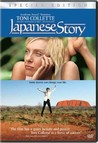

Movie Releases By Score

|
2301.
Flame and Citron
Release Date:
July 31, 2009
Based on true events and developed from eyewitness accounts during World War II, Ole Christian Madsen's political thriller Flame & Citron is an ultra-stylized and remarkable spy noir about the murky moral complexities of wartime. Copenhagen, 1944. World War II is entering its final stretch in Europe. Denmark is occupied by Nazi Germany. Two resistance fighters nicknamed Flame and Citron become heroes of the underground dealing violently with traitors to their cause. When the pair is sent to execute Flame's lover Ketty, the line between ally and enemy is blurred forcing them to determine their own orders which starts with killing the much hated and feared chief of the Gestapo - Karl Heinz Hoffman. Variety's Todd McCarthy calls it, "Absorbing...accomplished. More than enough dark turns and unsettling moods to justify the comparison to Melville's ARMY OF SHADOWS." (IFC Films)
|

|
2302.
After Auschwitz
Release Date:
April 20, 2018
"You're free. Go home" Most Holocaust films end with these words, the very words that survivors heard at liberation. After Auschwitz begins with these words, inviting audiences to experience what happened next. For survivors, liberation from the camps was the beginning of a life long struggle. They wanted to go home, but there was no home left in Europe. They came to America and wanted to tell people about their pasts but were silenced for over three decades. "You're in America now, put it behind you". After Auschwitz is a "Post-Holocaust" documentary that captures what it means to survive and try to life a normal life after unspeakable tragedy. Six extraordinary women who all survived Auschwitz take us on a journey that American audiences have never seen before. These women all moved to Los Angeles, married, raised children and became "Americans" but they never truly found a place to call home. What makes the story so much more fascinating is how these women saw, interpreted and interacted with the changing face of America in the second half of the 20th century. They serve as our guides on an unbelievable journey, sometimes celebratory, sometimes heart breaking but always inspiring. It is also the only "Holocaust" film that includes Ricardo Montalban, George W. Bush and an appearance at The Kennedy Center Honors. After Auschwitz gives us the story that we have always wanted to see and one that in many ways is as important as the stories of the camps themselves.
|

|
2303.
The Russian Woodpecker
Release Date:
October 16, 2015
Fedor Alexandrovich is a radioactive man. He was four years old in 1986, when he was exposed to the toxic effects of the Chernobyl nuclear meltdown and forced to leave his home. Now 33, he is an artist in Ukraine, with radioactive strontium in his bones and a singular obsession with Chernobyl, and with the giant, mysterious steel pyramid now rotting away 2 miles from the disaster site: a hulking Cold War weapon known as the Duga and nicknamed the "Russian Woodpecker" for the constant clicking radio frequencies that it emits. In Gracia's documentary/conspiracy thriller, Alexandrovich returns to the ghost towns in the radioactive Exclusion Zone to try to find answers - and to decide whether to risk his life by revealing them, amid growing clouds of Ukraine's emerging revolution and war.
|

|
2304.
Sully
Release Date:
September 9, 2016

On January 15, 2009, the world witnessed the “Miracle on the Hudson” when Captain “Sully” Sullenberger glided his disabled plane onto the frigid waters of the Hudson River, saving the lives of all 155 aboard. However, even as Sully was being heralded by the public and the media for his unprecedented feat of aviation skill, an investigation was unfolding that threatened to destroy his reputation and his career.
|

|
2305.
Dressed to Kill
Release Date:
July 25, 1980

A mysterious blonde woman kills one of a psychiatrist's patients, and then goes after the high-class call girl who witnessed the murder.
|

|
2306.
Into the Abyss
Release Date:
November 11, 2011
In his fascinating exploration of a triple homicide case in Conroe, Texas, master filmmaker Werner Herzog probes the human psyche to explore why people kill—and why a state kills. In intimate conversations with those involved, including 28-year-old death row inmate Michael Perry, Herzog achieves what he describes as “a gaze into the abyss of the human soul.” Herzog’s inquiries also extend to the families of the victims and perpetrators as well as a state executioner and pastor who’ve been with death row prisoners as they’ve taken their final breaths. As he’s so often done before, Herzog’s investigation unveils layers of humanity, making an enlightening trip out of ominous territory. (IFC Films)
|

|
2307.
Interstellar
Release Date:
November 5, 2014
With our time on Earth coming to an end, a team of explorers undertakes the most important mission in human history; traveling beyond this galaxy to discover whether mankind has a future among the stars. [Paramount Pictures]
|

|
2308.
Harry Benson: Shoot First
Release Date:
December 9, 2016
Harry Benson: Shoot First charts the illustrious career of the renowned photographer who initially rose to fame alongside The Beatles, having been assigned to cover their inaugural trip to the United States in 1964. With unprecedented “behind the scenes” access, Benson captured some of the most vibrant and intimate portraits ever taken of the most popular band in history. His extensive portfolio includes iconic images of Winston Churchill, Bobby Fischer, Muhammad Ali, Greta Garbo, Michael Jackson, Dr. Martin Luther King, Jr., and the Robert F. Kennedy assassination, and his work has appeared in publications including Life, Vanity Fair and The New Yorker. Now 86, workaholic Benson has no intention of stopping.
|

|
2309.
Genesis
Release Date:
May 27, 2005

Animals are the main players in this flamboyant, modern, yet timeless Genesis. (ThinkFilm)
|

|
2310.
Bridge to Terabithia
Release Date:
February 16, 2007

Based on the popular Newberry Award-winning novel, Bridge to Terabithia is a fantasy/adventure story of friendship, family and the power of imagination. (Walt Disney Pictures)
|
2311.
The Attack
Release Date:
June 21, 2013
Amin Jaafari is an Israeli-Palestinian surgeon who has fully assimilated into Tel-Aviv society. His picture-perfect life is turned upside down when the police inform him that not only was his wife Sihem killed in a terrorist bombing but that she was the suicide bomber. Amin immediately rejects their accusation, but his conviction is shaken when he receives a posthumous letter from Sihem confirming her role in the carnage. Shattered by the startling revelation, Amin abandons the security of his adopted homeland and enters the Palestinian territories in pursuit of the zealots who recruited her. [Cohen Media Group]
|
|

|
2312.
The Heart of the Game
Release Date:
June 9, 2006
This documentary focuses on the passion and energy of a girls' high school basketball team.
|

|
2313.
Hollywood Shuffle
Release Date:
March 20, 1987
An actor (Robert Townsend) limited to stereotypical roles because of his ethnicity, dreams of making it big as a highly respected performer. As he makes his rounds, the film takes a satiric look at African American actors in Hollywood.
|

|
2314.
Happy People: A Year in the Taiga
Release Date:
January 25, 2013
With Happy People: A Year in the Taiga, Werner Herzog takes viewers on yet another unforgettable journey into remote and extreme natural landscapes. The acclaimed filmmaker presents this visually stunning documentary about the people living in the heart of the Siberian Taiga. Deep in the wilderness, far away from civilization, 300 people inhabit the small village of Bakhtia at the river Yenisei. There are only two ways to reach this outpost: by helicopter or boat. There‘s no telephone, running water or medical aid, The locals, whose daily routines have barely changed over the last centuries, live according to their own values and cultural traditions. With insightful commentary written and narrated by Herzog, Happy People: A Year in the Taiga follows one of the Siberian trappers through all four seasons of the year to tell the story of a culture virtually untouched by modernity. [Music Box Films]
|

|
2315.
The New Girlfriend
Release Date:
September 18, 2015
Following her best friend Laura's death, Claire (Anais Demoustier) reaches out to comfort Laura's bereaved husband David (Romain Duris), only to discover he has a secret. [Cohen Media Group]
|

|
2316.
The Dish
Release Date:
March 14, 2001
Set on a sheep farm in the remote town of Parkes, Australia in 1969, this is the amusing story of a satellite interface that served as a relay between NASA and Apollo 11 during the historic mission to the moon.
|
2317.
Egg
Release Date:
January 18, 2019
Over the course of one explosive evening, two couples and a surrogate must face their own ridiculous and sometimes heartbreaking shortcomings. Artist Tina (Alysia Reiner) and her passive-aggressive feminist husband (Gbenga Akinnagbe) invite her eight-months pregnant art school rival (Christina Hendricks) and power hungry, new-money husband (David Alan Basche) to their Brooklyn loft, surprising them with Tina’s new work-in-progress: a radical alternative to motherhood. But when their sensuous, non-traditional surrogate arrives (Anna Camp) the truth comes out, and the patriarchy fights to hang on by its teeth. [Gravitas Ventures]
|
|

|
2318.
Raising Bertie
Release Date:
June 9, 2017
An intimate, six-year portrait of three boys growing into adulthood in Bertie County, located in rural Eastern North Carolina, the film offers viewers a respectful and tender insight into the emotional lives of Reginald “Junior” Askew, David “Bud” Perry, and Davonte “Dada” Harrell. This raw and starkly poetic cinéma vérité film weaves their stories together as they navigate school, unemployment, violence, first love, fatherhood, and estrangement from family members and mentors, subtly exploring the complex relationships between generational poverty, economic isolation, and educational inequity.
|

|
2319.
Far From Men
Release Date:
May 1, 2015
A reclusive ex-soldier (Viggo Mortensen) is thrown into the woes of rebellion when he's ordered to escort a villager accused of murder to prison during the Algerian War. As their journey leads them through a deadly firefight between settlers and rebels, the two men on opposite sides of the conflict must join forces to survive. [Tribeca Film]
|

|
2320.
An Oversimplification of Her Beauty
Release Date:
April 26, 2013
With arresting insight, vulnerability, and a delightful sense of humor, Terence Nance’s explosively creative debut feature, An Oversimplification Of Her Beauty, documents the relationship between Terence and a lovely young woman (Namik Minter) as it teeters on the divide between platonic and romantic. Utilizing a tapestry of live action and animation, Terence explores the fantasies, emotions, and memories that race through his mind during a singular moment in time. [Variance Films]
|
|
|
2321.
Ahead of Time
Release Date:
September 10, 2010
With her love of adventure and fearlessness, Ruth Gruber defied tradition from the moment she became the world’s youngest PhD at the age of 20 in 1931. Ahead of Time tells the remarkable journey of 96 year-old Gruber, and is the directorial debut of noted cinematographer Bob Richman (The September Issue, My Architect, and An Inconvenient Truth). Gruber continued to make history throughout her trail-blazing career by becoming the first journalist to enter the Soviet Arctic in 1935 and escorting 1000 Holocaust refugees from Naples to New York in a secret war-time mission in 1944. She covered the heart wrenching ordeal of the refugees aboard the ship Exodus
1947 with photographs that helped change the world. (Reel Inheritance Films)
|

|
2322.
The Keys to the House
Release Date:
December 22, 2004
The story of a young father forging a relationship with his handicapped son, whom he meets for the first time as a teenager.
|

|
2323.
Billy Elliot
Release Date:
October 13, 2000
The life of 11-year old Billy Elliot (Bell), a coal miner's son in Northern England, is forever changed one day when he stumbles upon a ballet class during his weekly boxing lesson. (Universal Focus)
|

|
2324.
The Hurricane
Release Date:
December 29, 1999
In Norman Jewison's moving biopic, boxer Rubin "Hurricane" Carter (Washington) is convicted of murder and sentenced to life in prison in 1967 while steadfastly maintaining and professing his innocence. After being contacted by an admiring teenager living in Canada (Shannon), a series of events leads to the assemblage of a legal team which gives him hope for release.
|

|
2325.
The Muppet Movie
Release Date:
June 22, 1979
After a fateful meeting with a big-time talent agent, Kermit the Frog heads for Hollywood dreaming of show biz. Along the way, Fozzie Bear, the Great Gonzo and the dazzling Miss Piggy join him in hopes of becoming film stars too. But all bets are off when Kermit falls into the clutches of Doc Hopper (Charles Durning), a fast-food mogul seeking to promote his French-fried frog-leg franchise. (Walt Disney)
|

|
2326.
The Rescuers
Release Date:
June 22, 1977
After receiving a panicked plea for help from an orphan named Penny, the Rescue Aid Society springs into action. They might be petite, but Bianca and her shy assistant Bernard, have what it takes to solve this case. So they set out on an adventure to free the kidnapped girl from the clutches of the evil Madame Medusa and her brutish alligator henchmen. Together, they will need their wits to get help from the local swamp folk in order to save Penny and keep Madame Medusa from retrieving the diamond in Devil's Eye.
|

|
2327.
In Order of Disappearance
Release Date:
August 26, 2016
Introverted and hard-working snowplow driver Nils (Stellan Skarsgård) has just been named “Citizen of the Year,” when he receives news that his son has died of a heroin overdose. Disbelieving the official report, Nils soon uncovers evidence of the young man's murder - a victim in a turf war between the local crime boss, known as "The Count", and his Serbian rivals. Armed with heavy machinery and a good dose of beginner's luck, Nils embarks upon a quest for revenge that soon escalates into a full-blown underworld gang war, with the body count spiraling ever higher and higher.
|

|
2328.
Prisoners
Release Date:
September 20, 2013
How far would you go to protect your family? Keller Dover is facing every parent's worst nightmare. His six-year-old daughter, Anna, is missing, together with her young friend, Joy, and as minutes turn to hours, panic sets in. The only lead is a dilapidated RV that had earlier been parked on their street. Heading the investigation, Detective Loki arrests its driver, Alex Jones, but a lack of evidence forces his release. As the police pursue multiple leads and pressure mounts, knowing his child's life is at stake the frantic Dover decides he has no choice but to take matters into his own hands. But just how far will this desperate father go to protect his family?
|

|
2329.
The Secret Garden
Release Date:
August 13, 1993
A young, recently-orphaned girl is sent to England after living in India all her life. Once there, she begins to explore her new, seemingly-isolated surroundings -- and its secrets.
|

|
2330.
The History Boys
Release Date:
November 21, 2006
The History Boys tells the story of an unruly class of bright, funny history students in pursuit of an undergraduate place at Oxford or Cambridge. [Fox Searchlight]
|

|
2331.
Hercules
Release Date:
June 27, 1997
In order to return home to Mount Olympus, Hercules needs to prove he can move from "zero" to true hero with Pegasus, the flying stallion, and Phil -- a feisty personal trainer. Along the way, Hercules must match wits with Grecian beauty Meg and a comical hothead named Hades who, with the help of Pain and Panic, plans to take over the Universe.
|

|
2332.
A Mighty Heart
Release Date:
June 22, 2007
Angelina Jolie stars as Mariane Pearl, wife of slain journalist Daniel Pearl, in director Michael Winterbottom's adaptation of Mariane's memoir "A Mighty Heart: The Brave Life and Death of My Husband Danny Pearl," recounting the abduction and murder of her husband by Pakistani militants.
|

|
2333.
Becoming Traviata
Release Date:
May 15, 2013
Natalie Dessay prepares to take on the role of Violetta in this documentary about the staging of Verdi's masterwork at the Aix-en-Provence Festival in France.
|

|
2334.
Fastball
Release Date:
March 25, 2016
The essence of baseball is the primal battle between the pitcher and batter, but the magic of the game arises from that confrontation, only 396 milliseconds in the making. The mysteries and memories of baseball's greatest heroes are revealed in Fastball, featuring interviews with dozens of former players, from legendary Hall of Famers to current All-Stars.
|

|
2335.
How to Train Your Dragon
Release Date:
March 26, 2010
Set in the mythical world of burly Vikings and wild dragons, and based on the book by Cressida Cowell, the action comedy tells the story of Hiccup, a Viking teenager who doesn’t exactly fit in with his tribe's longstanding tradition of heroic dragon slayers. Hiccup's world is turned upside down when he encounters a dragon that challenges he and his fellow Vikings to see the world from an entirely different point of view. [Dreamworks Animation]
|

|
2336.
Crazy Rich Asians
Release Date:
August 15, 2018
Crazy Rich Asians follows native New Yorker Rachel Chu (Constance Wu) as she accompanies her longtime boyfriend, Nick Young (Henry Golding), to his best friend’s wedding in Singapore. Excited about visiting Asia for the first time but nervous about meeting Nick’s family, Rachel is unprepared to learn that Nick has neglected to mention a few key details about his life. It turns out that he is not only the scion of one of the country’s wealthiest families but also one of its most sought-after bachelors. Being on Nick’s arm puts a target on Rachel’s back, with jealous socialites and, worse, Nick’s own disapproving mother (Michelle Yeoh) taking aim. And it soon becomes clear that while money can’t buy love, it can definitely complicate things.
|

|
2337.
Sir! No Sir!
Release Date:
April 7, 2006
This documentary examines the resistance to the Vietnam war within the military.
|
2338.
Place Vendôme
Release Date:
August 18, 2000
Catherine Deneuve is the alcoholic wife of a diamond merchant who must re-enter the secretive and glamorous world of the gem trade upon her husband's death.
|
|

|
2339.
Invictus
Release Date:
December 11, 2009
Newly elected President Mandela knows his nation remains racially and economically divided in the wake of apartheid. Believing he can bring his people together through the universal language of sport, Mandela rallies South Africa's underdog rugby team as they make an unlikely run to the 1995 World Cup Championship match. (Warner Bros.)
|

|
2340.
Herb & Dorothy
Release Date:
June 5, 2009
Herb and Dorothy Vogel redefine what it means to be an art collector.
|

|
2341.
The Italian
Release Date:
January 19, 2007
In his feature directorial debut, director Andrei Kravchuk addresses with intelligence and poignancy the urgent issue of illegal adoption in Russia, which has become a well-documented international crisis. The Italian is based on the true story of a small Russian boy abandoned in an orphanage who goes in search of his birth mother. (Sony Pictures Classics)
|
2342.
Mommy
Release Date:
January 23, 2015
A feisty widowed single mom finds herself burdened with the full-time custody of her rambunctious
15-year-old ADHD son. As they try to make ends meet, Kyla, the peculiar girl across the street, offers her help. Together, they find a new sense of balance, and hope is regained.
|
|

|
2343.
The Pirogue
Release Date:
January 23, 2013
Thirty men and one woman leave Senegal in a pirogue captained by a local fisherman to undertake a treacherous seven-day crossing of the Atlantic to Spain where they hope to find better opportunities at the end of their journey.
|

|
2344.
The Duchess of Langeais
Release Date:
February 22, 2008
Antoinette is the Duchess of Langeais, a married coquette who frequents the most extravagant balls in 1820s Paris during the Restoration, when hypocrisy and vanity reign. From the moment of the handsome general Armand de Montriveau's first meeting with her, he realized it was true love. Flattered by his attentions, the alluring Antoinette orchestrates a calculating game of seduction, but she repeatedly refuses Montriveau. Despite his sincere romantic declarations, Montriveau's passion remains unfulfilled. When the humiliated Montriveau eventually seeks his revenge, Antoinette's love awakens. But it may well be too late for the star-crossed lovers. (IFC Films)
|

|
2345.
The Golden Dream
Release Date:
August 28, 2015
Juan, Sara and Samuel, three teenagers from the slums of Guatemala, travel to the US in search of a better life. On their journey through Mexico, they meet Chauk, an indian from Chiapas who doesn't speak Spanish. Travelling together in cargo trains, walking on the railroad tracks, they soon have to face a harsh reality.
|

|
2346.
Eastern Boys
Release Date:
February 27, 2015
Arriving from all over the Eastern Bloc, the men who loiter around the Gare du Nord train station in Paris are scraping by however they can, forming gangs for support and protection, ever fearful of being caught by the police and deported. When the middle-aged, bourgeois Daniel (Olivier Rabourdi) approaches a boyishly handsome Ukrainian who calls himself Marek for a date, he learns the young man is willing to do anything for some cash. What Daniel intends only as sex-for-hire begets a home invasion and then an unexpectedly profound relationship. The drastically different circumstances of the two men’s lives reveal hidden facets of the city they share. [First Run Features]
|
2347.
Big Hero 6
Release Date:
November 7, 2014
Big Hero 6 is an action-packed comedy-adventure about robotics prodigy Hiro Hamada, who learns to harness his genius—thanks to his brilliant brother Tadashi and their like-minded friends: adrenaline junkie Go Go Tamago, neatnik Wasabi, chemistry whiz Honey Lemon and fanboy Fred. When a devastating turn of events catapults them into the midst of a dangerous plot unfolding in the streets of San Fransokyo, Hiro turns to his closest companion - a robot named Baymax - and transforms the group into a band of high-tech heroes determined to solve the mystery. [Walt Disney Animation Studios]
|
|

|
2348.
My Kid Could Paint That
Release Date:
October 5, 2007
In the span of only a few months, 4-year-old Marla Olmstead rocketed from total obscurity into
international renown – and sold over $300,000 dollars worth of paintings. She was compared to
Kandinsky and Pollock, and called “a budding Picasso.” But not all of the attention was positive. From the beginning, many faulted her parents for exposing Marla to the glare of the media and accused the couple of exploiting their daughter for financial gain. Others felt her work was, in fact, comparable to the great Abstract Expressionists – but saw this as emblematic of the meaninglessness of Modern Art. And then, five months into Marla’s new life as a celebrity and just short of her fifth birthday, a bombshell dropped. CBS’ 60 Minutes aired an exposé suggesting strongly that the paintings were painted by her father, himself an amateur painter. As quickly as the public built Marla up, they tore her down. The Olmsteads were barraged with hate mail, ostracized around town, sales of the paintings dried up, and Marla’s art dealer considered moving out of Binghamton. Embattled, the Olmsteads turned to the filmmaker to clear their name. Torn between his own responsibility as a journalist and the family’s desire to see their integrity restored, the director finds himself drawn deeper and deeper into a situation that can’t possibly end well for him and them, and could easily end badly for both. (Sony Classics)
|
2349.
Two Lovers
Release Date:
February 13, 2009
Leonard is a charismatic but troubled young man who moves back into his childhood home following a recent heartbreak. While recovering under the watchful eye of his parents, Leonard meets two women in quick succession: Michelle, a mysterious and beautiful neighbor who is exotic and out-of-place in Leonard's staid world, and Sandra, the lovely and caring daughter of a businessman who is buying out his family's dry-cleaning business. Leonard becomes deeply infatuated by Michelle, who seems poised to fall for him, but is having a self-destructive affair with a married man. At the same time, mounting pressure from his family pushes him towards committing to Sandra. Leonard is forced to make an impossible decision – between the impetuousness of desire and the comfort of love – or risk falling back into the darkness that nearly killed him. [Magnolia Pictures]
|
|

|
2350.
As I Open My Eyes
Release Date:
September 9, 2016
Tunis, summer 2010, a few months before the Revolution: Farah, 18 years-old, has just graduated and her family already sees her as a future doctor. But she doesn't think the same way. She sings in a political rock band. She has a passion for life, gets drunk, discovers love and her city by night against the will of her mother Hayet, who knows Tunisia and its dangers too well.
|

|
2351.
Sin City
Release Date:
April 1, 2005
Robert Rodriguez and comic book icon Frank Miller co-direct Sin City, based on the series of graphic novels created, written and illustrated by Miller. The film is infested with criminals, crooked cops and sexy dames, some searching for vengeance, some for redemption and others, both. [Dimension Films]
|

|
2352.
For the Love of Spock
Release Date:
September 9, 2016
For the Love of Spock tells the life story of Star Trek’s Mr. Spock and the actor who played him, Leonard Nimoy, for nearly fifty years. The film’s focus began as a celebration of the fifty-year anniversary of Star Trek: The Original Series, but after Leonard passed away in February 2015, his son, director Adam Nimoy, was ready to tell another story: his personal experience growing up with Leonard and Spock. Adam not only shares details on the creation, evolution, and universal impact of Mr. Spock, but also about the ups and downs of being the son of a TV icon. For the Love of Spock is laden with never-before-seen footage and interviews of friends, family and colleagues that include William Shatner and the original Star Trek cast, Zachary Quinto and the new crew of the Starship Enterprise, the Big Bang Theory cast, filmmaker JJ Abrams and astrophysicist Neil deGrasse Tyson. [Gravitas Ventures]
|

|
2353.
Land and Shade
Release Date:
June 17, 2016
Alfonso is an old farmer who has returned home to tend to his son, who is gravely ill. He rediscovers his old house, where the woman who was once his wife still lives, with his daughter-in-law and grandson. The landscape that awaits him resembles a wasteland. Vast sugar cane plantations surround the house, producing perpetual clouds of ash. 17 years after abandoning them, Alfonso tries to fit back in and save his family.
|

|
2354.
Neil Young Journeys
Release Date:
June 29, 2012
This past May, Neil Young brought his solo tour to Toronto's Massey Hall, an iconic venue in the city of his birth.
|

|
2355.
My Country, My Country
Release Date:
August 4, 2006
Working alone in Iraq over eight months, director/cinematographer Laura Poitras creates an extraordinarily intimate portrait of Iraqis living under U.S. occupation. (Zeitgeist Films)
|

|
2356.
Source Code
Release Date:
April 1, 2011
When decorated soldier Captain Colter Stevens wakes up in the body of an unknown man, he discovers he's part of a mission to find the bomber of a Chicago commuter train. In an assignment unlike any he's ever known, he learns he's part of a government experiment called the "Source Code," a program that enables him to cross over into another man's identity in the last 8 minutes of his life. With a second, much larger target threatening to kill millions in downtown Chicago, Colter re-lives the incident over and over again, gathering clues each time, until he can solve the mystery of who is behind the bombs and prevent the next attack. (Summit Entertainment)
|

|
2357.
Metallica: Some Kind of Monster
Release Date:
July 9, 2004
Three years in the making, this documentary provides a fascinating, in-depth portrait of the most successful heavy metal band of all time, as they faced monumental personal and professional challenges while recording their first studio album of original songs in five years. (IFC Films)
|

|
2358.
The Nazi Officer's Wife
Release Date:
June 13, 2003
This documentary explores faith, family, identity and love in a complex portrait of a woman who had to bury her true self in order to survive. (Seventh Art Releasing)
|

|
2359.
7 Days in September
Release Date:
September 6, 2002
Chronicles the life and events of 28 New Yorkers during the week of 9/11.
|

|
2360.
A Matter of Taste
Release Date:
September 7, 2001
Nicolas, a handsome, young waiter, is befriended by Frédéric Delamont, a wealthy middle-aged businessman. Delamont, a man of power, influence and strictly refined tastes, is immediately smitten by Nicolas' charm. Lonely and phobic, Delamont offers Nicolas a lucrative job as his personal food taster. In spite of their differences, a close friendship begins to emerge between the two men. However, their bond of trust and admiration soon spirals downward into a dangerous game of deceit and obsession for which neither is prepared. (Attitude Films)
|

|
2361.
Shower
Release Date:
July 7, 2000
Set in and around a traditional Chinese communal bathhouse, the film chronicles changing times that put the bathhouse's future in doubt, as the son of the owner comes home to visit when he receives a postcard from his mentally challenged brother informing him that their father has died.
|
2362.
Such a Long Journey
Release Date:
March 24, 2000
Set on the eve of the 1971 war between India and Pakistan, the members of the Noble family in tension-filled Bombay vehemently disagree about what to do when an old friend, a soldier who'd abruptly disappeared, finally contacts them, only to ask a dangerous favor. Parsi Gustad Noble's (Seth) apparently close-knit family is held together precariously, their fraying bonds mirroring their once genteel, deteriorating housing compound.
|
|

|
2363.
Beast
Release Date:
May 11, 2018
Moll (Jessie Buckley) is 27 and still living at home, stifled by the small island community around her and too beholden to her family to break away. When she meets Pascal (Johnny Flynn), a free-spirited stranger, a whole new world opens up to her and she begins to feel alive for the first time, falling madly in love. Finally breaking free from her family, Moll moves in with Pascal to start a new life. But when he is arrested as the key suspect in a series of brutal murders, she is left isolated and afraid. Choosing to stand with him against the suspicions of the community, Moll finds herself forced to make choices that will impact her life forever.
|

|
2364.
Joe
Release Date:
April 11, 2014
An ex-con (Nicholas Cage), who is the unlikeliest of role models, meets a 15-year-old boy (Tye Sheridan) and is faced with the choice of redemption or ruin.
|

|
2365.
Under Fire: Journalists in Combat
Release Date:
November 5, 2011
Only two journalists were killed in World War I. Sixty-three journalists were killed in World War II. In the last two decades almost a journalist a week has been killed, with the dead numbering in the thousands. The conclusions are obvious. Journalism in times of war has become an increasingly lethal endeavor - and extremely traumatic – as journalists are now viewed as natural targets by combatants; subject to kidnapping, torture and even beheadings. With journalists facing these new realities, UNDER FIRE weaves together combat footage and first-hand accounts by the journalists who were there to reveal what they see, think and feel as they confront the physical danger and savagery of war. (MercuryMedia International)
|

|
2366.
The Song of Sparrows
Release Date:
April 3, 2009
Karim works at an ostrich farm outside of Tehran, Iran. He leads a simple and contented life with his family in his small house, until one day when one of the ostriches runs away. Karim is blamed for the loss and is fired from the farm. Soon after, he travels to the city in order to repair his elder daughter’s hearing aid but finds himself mistaken for a motorcycle taxi driver. Thus begins his new profession: ferrying people and goods through heavy traffic. But the people and material goods that he deals with daily start to transform Karim’s generous and honest nature, much to the distress of his wife and daughters. It is up to those closest to him to restore the values that he had once cherished. (Regent Releasing)
|

|
2367.
Starlet
Release Date:
November 9, 2012
Starlet explores the unlikely friendship between 21 year-old aspiring actress Jane and elderly widow Sadie after their worlds collide in California's San Fernando Valley. Jane spends her time getting high with her dysfunctional roommates and taking care of her Chihuahua Starlet, while Sadie passes her days alone, tending to her garden. After a confrontation at a yard sale, Jane finds something unexpected in a relic from Sadie's past. Her curiosity piqued, she tries to befriend the caustic older woman. Secrets emerge as their relationship grows, revealing that nothing is ever as it seems. [Music Box Films]
|

|
2368.
Tehran Taboo
Release Date:
February 14, 2018
In the bustling metropolis of Tehran, avoiding prohibitions has become an everyday sport and breaking taboos can be a means of personal emancipation. Nevertheless, women invariably end up on the bottom rung of the social order. A young woman needs an operation to “restore” her virginity. A judge in the Islamic Revolutionary Court exhorts favors from a prostitute in exchange for a favorable ruling. The wife of an imprisoned drug addict is denied the divorce she needs in order to live independently. [Kino Lorber]
|

|
2369.
State of Fear
Release Date:
January 11, 2006
In this documentary, the spectacular beauty of Peru is juxtaposed with the disturbing revelations of that nation's Truth Commission detailing a 20-year reign of terror. (Film Forum)
|

|
2370.
La faute à Fidel!
Release Date:
August 3, 2007
Blame it on Fidel is the story of a 9 year-old girl growing up during the early 70's who's quiet, middle-class life is thrown into chaos when her parents become political activists. (Gaumont)
|

|
2371.
Thor: Ragnarok
Release Date:
November 3, 2017
Thor is imprisoned on the other side of the universe without his mighty hammer and finds himself in a race against time to get back to Asgard to stop Ragnarok — the destruction of his homeworld and the end of Asgardian civilization — at the hands of an all-powerful new threat, the ruthless Hela. But first he must survive a deadly gladiatorial contest that pits him against his former ally and fellow Avenger — the Incredible Hulk!
|
2372.
Narco Cultura
Release Date:
November 22, 2013
To a growing number of Mexicans and Latinos in the Americas, narco traffickers have become iconic outlaws and the new models of fame and success. They represent a pathway out of the ghetto - a new form of the American Dream, fueled by the war on drugs. Narco Cultura looks at this explosive phenomenon from within; cycles of addiction to money, drugs and violence that are rapidly gaining strength on both sides of the US/Mexican border.
|
|

|
2373.
Teacher's Pet
Release Date:
January 16, 2004
The hysterical tale of a "Spot," a talking canine whose ultimate wish is to become "a real boy." (Disney)
|

|
2374.
La Sapienza
Release Date:
March 20, 2015
At the height of his career, Alexandre decides to set off for Italy with the idea of completing his draft – interrupted years earlier – of a book on Borromini. He is accompanied by his wife Alienor who feels her relationship with her husband gradually slipping away along with the passion it used to inspire. Having reached Stresa they happen to meet Goffredo and Lavinia, a pair of siblings who live there: the former is about to embark in architectural studies, the second is suffering from a nervous disorder. Reviving a maternal instinct that has lain dormant within her for so many years, Alienor feels the need to stay by Lavinia’s side to help her overcome her anxiety and suggests that her husband continue on his travels with Goffredo. This separation will be the start of an inner journey for both Alexandre and Alienor. [Kino Lorber]
|

|
2375.
The Haunting
Release Date:
September 18, 1963
A scientist doing research on the paranormal invites two women to a haunted mansion. One of the participants soon starts losing her mind.
|

|
2376.
Lemon Tree
Release Date:
April 17, 2009
Lemon Tree is Eran Riklis' engaging human drama of one woman's struggle to preserve her way of life in the midst of political turmoil. The wonderful Hiam Abbass is Salma, a Palestinian widow who earns her living tending to her late father's lemon grove. When an Israeli government minister moves next door and declares the grove a potential security threat, Salma struggles to defend her peaceful livelihood. Personal drama gives way to political controversies as Salma forms an unexpected bond with the minister's lonely wife, and takes her protest - with the help of her young lawyer - all the way to the Israeli Supreme Court. (IFC Films)
|

|
2377.
U-Carmen e-Khayelitsha
Release Date:
March 28, 2007
Based on Bizet's opera "Carmen," this film is sung and spoken in Xhosa, one of South Africa's eleven official languages.
|

|
2378.
Breach
Release Date:
February 16, 2007
Inspired by true events, Breach is a dramatic thriller set inside the halls of the FBI -- the gatekeeper of the nation's most sensitive and potentially volatile secrets. Following his success with the electrifying and acclaimed "Shattered Glass," co-writer/director Billy Ray explores more deeply the disillusionment and questionable moral mentorship of a young idealist. [Universal Pictures]
|

|
2379.
Among the Believers
Release Date:
September 30, 2016
Charismatic cleric Abdul Aziz Ghazi, an ISIS supporter and Taliban ally, is waging jihad against the Pakistani state. His dream is to impose a strict version of Shariah law throughout the country, as a model for the world. A flashpoint in Aziz's holy war took place in 2007, when the government leveled his flagship mosque to the ground, killing his mother, brother, only son and 150 students. With unprecedented access, Among the Believers follows Aziz on his very personal quest to create an Islamic utopia, during the bloodiest period in Pakistan's modern history.
|
|
|
2380.
2 or 3 Things I Know About Him
Release Date:
January 24, 2007
What would your family reminiscences about dad sound like if he had been an early supporter of Hitler’s, a leader of the notorious SA and the Third Reich’s minister in charge of Slovakia, including its Final Solution? Executed as a war criminal in 1947, Hanns Ludin left behind a grieving widow and six young children, the youngest of whom became a filmmaker. It's a fascinating, maddening, sometimes even humorous look at what the director calls "a typical German story." (Film Forum)
|
|
|
2381.
Arna's Children
Release Date:
October 8, 2004
A documentary about the tragedy of the Israeli occupation, focusing on an alternative education system and theatre group developed by a woman from a Zionist family who is married to a Palestinian Arab.
|
|  |
2382.
Japanese Story
Release Date:
December 31, 2003
A cross-cultural journey, an emotional drama and a haunting love story between an ambitious geologist and a Japanese businessman. (Samuel Goldwyn Films)
|

|
2383.
28 Days Later...
Release Date:
June 27, 2003
When a group of animal rights activists frees primates from a research facility, a deadly virus which causes murderous behavior is unleashed.
|

|
2384.
Tully
Release Date:
November 1, 2002
Based on the O'Henry Prize winning story by Tom McNeal, this film explores a legacy of love between a family of men, and the events of one summer that change their world forever. (TellTale Films)
|

|
2385.
Cast Away
Release Date:
December 22, 2000
Hanks stars as Chuck Noland, a FedEx systems engineer whose personal and professional life are ruled by the clock. His manic existence abruptly ends when, after a plane crash, he becomes isolated on a remote island - cast away into the most desolate environment imaginable. (Twentieth Century Fox)
|

|
2386.
Les convoyeurs attendent
Release Date:
March 17, 2000
In this Belgian comedy-drama, a father coerces his teenage son to pursue a world record in order to win a car. He urges his son to become the record holder by opening and closing the most doors in a twenty-four hour period.
|

|
2387.
South Park: Bigger Longer & Uncut
Release Date:
June 30, 1999
A cinematic version of the popular animated television series.
|
2388.
High Art
Release Date:
June 12, 1998
An award-winning romantic drama about a photo magazine editor (Mitchell) and the heroin-addicted former photo prodigy (Sheedy) with whom she falls in love.
|
|

|
2389.
Wag the Dog
Release Date:
December 25, 1997
Wickedly fictional with historical overtones truer than many care to admit, Wag The Dog examines the blurred lines between politics, the media and show business. (New Line Productions)
|

|
2390.
The Brothers McMullen
Release Date:
August 18, 1995
An portrait of the lives and loves of three Irish-Catholic brothers living on Long Island.
|

|
2391.
Cape Fear
Release Date:
November 13, 1991
Martin Scorsese's 1991 remake of J. Lee Thompson's 1962 thriller. (Universal/Amblin)
|

|
2392.
Novitiate
Release Date:
October 27, 2017
Spanning over a decade from the early 1950s through to the mid-60s, Novitiate is about a young girl's first initiation with love, in this case with God. Raised by a non-religious, single mother in rural Tennessee, a scholarship to Catholic school soon finds Cathleen drawn into the mystery and romanticism of a life devoted to the worship and servitude of God. With the dawn of the Vatican II era, radical changes in the Church are threatening the course of nuns’ lives. As she progresses from the postulant to the novitiate stage of training, she finds her faith repeatedly confronted and challenged by the harsh, often inhumane realities of being a servant of God. Cathleen finds herself struggling with issues of faith, sexuality, and recent changes in life of the Church. [Sony Pictures Classics]
|

|
2393.
(T)error
Release Date:
October 7, 2015
Saeed "Shariff" Torres, a counterterrorism informant for more than two decades, takes on what he swears is his last job for the FBI and invites filmmakers to follow his covert efforts to befriend a suspected jihadist - without informing his superiors. As surprising revelations emerge, not only about Torres’ past, but also about the increasingly murky ethical grounds of his present mission, (T)error explores just how far we are going to prevent terror and exactly what liberties we are sacrificing to get there.
|

|
2394.
All This Panic
Release Date:
March 31, 2017
All This Panic takes an intimate look into the lives of seven teenage girls as they come of age in NYC. The film mixes portraiture and verite as the teens navigate the ephemeral and fleeting transition between child and adult. Shot over a three-year period in a lush and cinematic style, All This Panic is a meditation on the mysterious, sometimes painful, and ultimately exhilarating time of life. In a world where “they want to see us, but they don’t want to hear us.” this is a project comprised of young women speaking to their own experiences. [Factory 25]
|

|
2395.
From Afar
Release Date:
June 8, 2016
Wealthy, middle-aged Armando (Alfredo Castro) lures young men to his home with money. He doesn’t want to touch, only watch from a strict distance. Armando’s first encounter with street thug Elder (Luis Silva) is violent, but this doesn’t discourage the lonely man’s fascination with the tough handsome teenager. Financial interest keeps Elder visiting him regularly and an unexpected intimacy emerges. However, Armando’s haunted past looms large, and Elder commits the ultimate act of affection on Armando’s behalf. [Strand Releasing]
|

|
2396.
Roxanne
Release Date:
June 19, 1987
An adaptation of "Cyrano de Bergerac", starring a big-hearted, and big-nosed fire chief (Steve Martin) who falls in love with a beautiful astronomer (Daryl Hannah).
|

|
2397.
Tangerines
Release Date:
April 17, 2015
Set in 1992, during the growing conflict between Georgia and Abkhazian separatists in the wake of the Soviet Union’s dissolution, this compassionate tale focuses on two Estonian immigrant farmers who decide to remain in Georgia long enough to harvest their tangerine crop. When the war comes to their doorsteps, Ivo (Lembit Ulfsak) takes in two wounded soldiers from opposite sides. The fighters vow to kill each other when they recover, but their extended period of recovery has a humanizing effect that might transcend ethnic divides. Set against a beautiful landscape defiled by war, this poetic film makes an eloquent statement for peace. [Samuel Goldwyn Films]
|

|
2398.
1945
Release Date:
November 1, 2017
On a summer day in 1945, an Orthodox man and his grown son return to a village in Hungary while the villagers prepare for the wedding of the town clerk's son. The townspeople – suspicious, remorseful, fearful, and cunning – expect the worst and behave accordingly. The town clerk fears the men may be heirs of the village's deported Jews and expects them to demand their illegally acquired property back. [Menemsha Films]
|

|
2399.
Mysterious Skin
Release Date:
May 6, 2005

Based on the acclaimed novel by Scott Heim, Mysterious Skin explores the hearts and minds of two very different boys who come to find the key to their future happiness lies in the exorcism of their collective demons. (Tartan Films)
|

|
2400.
Red Road
Release Date:
April 13, 2007
Jackie works as a CCTV operator. Each day she watches over a small part of the world, protecting the people living their lives under her gaze. One day a man appears on her monitor, a man she thought she would never see again, a man she never wanted to see again. Now she has no choice, she is compelled to confront him. (Tartan Films)
|